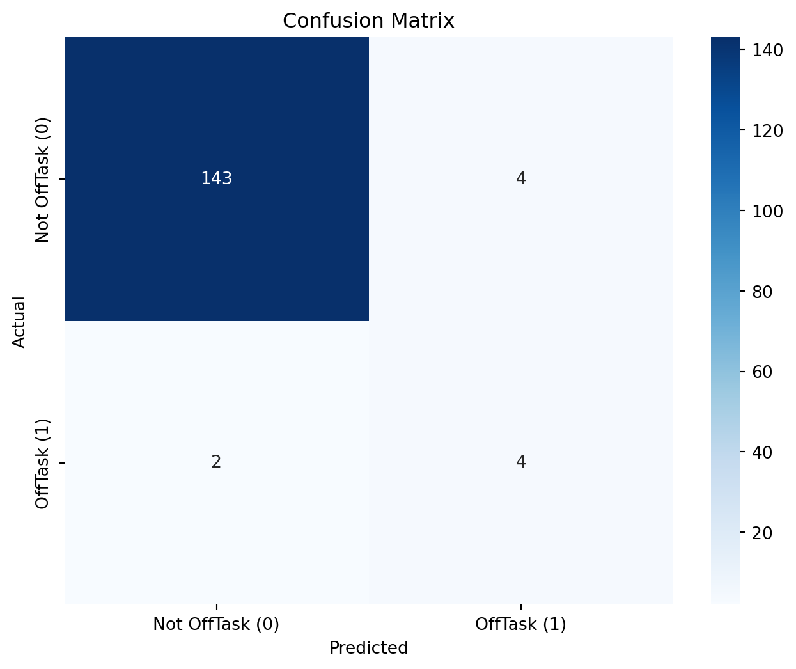

import pandas as pdfrom sklearn.model_selection import train_test_split, GridSearchCV, cross_val_scorefrom sklearn.ensemble import RandomForestClassifier, GradientBoostingClassifierfrom sklearn.metrics import classification_report, cohen_kappa_scorefrom imblearn.over_sampling import SMOTEfrom xgboost import XGBClassifierimport numpy as npimport matplotlib.pyplot as pltfrom sklearn.metrics import precision_recall_curve# Load the datasetdata = pd.read_csv('data/ca1-dataset.csv')# Prepare the datadata['OffTask'] = data['OffTask'].map({'N': 0, 'Y': 1}) # Encode target variableX = data.drop(columns=['Unique-id', 'namea', 'OffTask']) # Featuresy = data['OffTask'] # Target variable# Split the data into training and testing setsX_train, X_test, y_train, y_test = train_test_split(X, y, test_size=0.2, random_state=42)# Apply SMOTE to the training datasmote = SMOTE(random_state=42)X_train_resampled, y_train_resampled = smote.fit_resample(X_train, y_train)# Calculate the ratio of classesclass_0_count =sum(y_train_resampled ==0)class_1_count =sum(y_train_resampled ==1)ratio_of_classes = class_0_count / class_1_count# Define the modelmodel = RandomForestClassifier(random_state=42, class_weight='balanced')# Define the parameter gridparam_grid = {'n_estimators': [50, 100, 200],'max_depth': [None, 10, 20, 30],'min_samples_split': [2, 5, 10],'min_samples_leaf': [1, 2, 4]}# Set up GridSearchCVgrid_search = GridSearchCV(estimator=model, param_grid=param_grid, scoring='f1', cv=5, n_jobs=-1, verbose=2)# Fit GridSearchCVgrid_search.fit(X_train_resampled, y_train_resampled)# Best parametersprint("Best parameters found: ", grid_search.best_params_)
Fitting 5 folds for each of 108 candidates, totalling 540 fits
Best parameters found: {'max_depth': 20, 'min_samples_leaf': 1, 'min_samples_split': 2, 'n_estimators': 50}
# Train the model on the resampled datamodel.fit(X_train_resampled, y_train_resampled)# Make predictions on the test sety_pred = model.predict(X_test)# Evaluate the modelkappa = cohen_kappa_score(y_test, y_pred)print("Kappa Score:", kappa)print(classification_report(y_test, y_pred))
# Train the XGBoost model without the use_label_encoder parameterxgb_model = XGBClassifier(eval_metric='logloss', scale_pos_weight=ratio_of_classes)xgb_model.fit(X_train_resampled, y_train_resampled)# Make predictionsy_pred_xgb = xgb_model.predict(X_test)# Evaluate the modelkappa_xgb = cohen_kappa_score(y_test, y_pred_xgb)print("Kappa Score (XGBoost):", kappa_xgb)print(classification_report(y_test, y_pred_xgb))
# Define the Gradient Boosting modelgb_model = GradientBoostingClassifier( learning_rate=0.2, max_depth=5, min_samples_split=10, n_estimators=200, random_state=42)# Fit the model on the resampled training datagb_model.fit(X_train_resampled, y_train_resampled)# Make predictions on the test sety_pred_gb = gb_model.predict(X_test)# Evaluate the modelkappa_gb = cohen_kappa_score(y_test, y_pred_gb)print("Kappa Score (Gradient Boosting):", kappa_gb)print(classification_report(y_test, y_pred_gb))
# Get predicted probabilitiesy_pred_proba_gb = gb_model.predict_proba(X_test)[:, 1]# Set a new thresholdthreshold =0.3# Example thresholdy_pred_adjusted_gb = (y_pred_proba_gb >= threshold).astype(int)# Evaluate the model with the adjusted predictionskappa_adjusted_gb = cohen_kappa_score(y_test, y_pred_adjusted_gb)print("Adjusted Kappa Score (Gradient Boosting):", kappa_adjusted_gb)print(classification_report(y_test, y_pred_adjusted_gb))
# Experiment with different thresholdsthresholds = np.arange(0.0, 1.0, 0.05)precisions = []recalls = []kappa_scores = []for threshold in thresholds: y_pred_adjusted = (y_pred_proba_gb >= threshold).astype(int) precision = np.sum(y_pred_adjusted[y_test ==1]) / np.sum(y_pred_adjusted) if np.sum(y_pred_adjusted) >0else0 recall = np.sum(y_pred_adjusted[y_test ==1]) / np.sum(y_test) if np.sum(y_test) >0else0 kappa = cohen_kappa_score(y_test, y_pred_adjusted) precisions.append(precision) recalls.append(recall) kappa_scores.append(kappa)plt.figure(figsize=(10, 6))plt.plot(thresholds, precisions, label='Precision', marker='o')plt.plot(thresholds, recalls, label='Recall', marker='o')plt.plot(thresholds, kappa_scores, label='Kappa Score', marker='o')plt.title('Precision, Recall, and Kappa Score vs. Threshold')plt.xlabel('Threshold')plt.ylabel('Score')plt.xticks(np.arange(0.0, 1.1, 0.1))plt.legend()plt.grid()plt.show()best_threshold_index = np.argmax(recalls)best_threshold = thresholds[best_threshold_index]print(f"Best Threshold for Maximum Recall: {best_threshold:.2f}")print(f"Precision at Best Threshold: {precisions[best_threshold_index]:.2f}")print(f"Recall at Best Threshold: {recalls[best_threshold_index]:.2f}")print(f"Kappa Score at Best Threshold: {kappa_scores[best_threshold_index]:.2f}")
Best Threshold for Maximum Recall: 0.00
Precision at Best Threshold: 0.04
Recall at Best Threshold: 1.00
Kappa Score at Best Threshold: 0.00
# Initialize lists to store precision, recall, and F1-score valuesf1_scores = []# Calculate precision, recall, and F1-score for each thresholdfor threshold in thresholds: y_pred_adjusted = (y_pred_proba_gb >= threshold).astype(int)# Calculate precision and recall precision = np.sum(y_pred_adjusted[y_test ==1]) / np.sum(y_pred_adjusted) if np.sum(y_pred_adjusted) >0else0 recall = np.sum(y_pred_adjusted[y_test ==1]) / np.sum(y_test) if np.sum(y_test) >0else0# Calculate F1-score f1_score =2* (precision * recall) / (precision + recall) if (precision + recall) >0else0# Append F1-score to the list f1_scores.append(f1_score)# Plot Precision, Recall, and F1-Score curveplt.figure(figsize=(10, 6))plt.plot(thresholds, precisions, label='Precision', marker='o')plt.plot(thresholds, recalls, label='Recall', marker='o')plt.plot(thresholds, f1_scores, label='F1 Score', marker='o')plt.title('Precision, Recall, and F1 Score vs. Threshold')plt.xlabel('Threshold')plt.ylabel('Score')plt.xticks(np.arange(0.0, 1.1, 0.1))plt.legend()plt.grid()plt.show()# Print the best threshold based on maximum F1-scorebest_threshold_index = np.argmax(f1_scores)best_threshold = thresholds[best_threshold_index]print(f"Best Threshold for Maximum F1-Score: {best_threshold:.2f}")print(f"Precision at Best Threshold: {precisions[best_threshold_index]:.2f}")print(f"Recall at Best Threshold: {recalls[best_threshold_index]:.2f}")print(f"Kappa Score at Best Threshold: {kappa_scores[best_threshold_index]:.2f}")
Best Threshold for Maximum F1-Score: 0.90
Precision at Best Threshold: 0.50
Recall at Best Threshold: 0.67
Kappa Score at Best Threshold: 0.55
# Make predictions using the new thresholdy_pred_final = (gb_model.predict_proba(X_test)[:, 1] >=0.90).astype(int)# Evaluate the model with the new predictionskappa_final = cohen_kappa_score(y_test, y_pred_final)print("Final Kappa Score with Threshold 0.90:", kappa_final)# Print the classification reportfrom sklearn.metrics import classification_reportprint(classification_report(y_test, y_pred_final))
# Optionally, you can also calculate and print confusion matrixfrom sklearn.metrics import confusion_matrixconf_matrix = confusion_matrix(y_test, y_pred_final)print("Confusion Matrix:\n", conf_matrix)# Visualize the confusion matrix (optional)import seaborn as snsimport matplotlib.pyplot as pltplt.figure(figsize=(8, 6))sns.heatmap(conf_matrix, annot=True, fmt='d', cmap='Blues', xticklabels=['Not OffTask (0)', 'OffTask (1)'], yticklabels=['Not OffTask (0)', 'OffTask (1)'])plt.ylabel('Actual')plt.xlabel('Predicted')plt.title('Confusion Matrix')plt.show()# Perform k-fold cross-validationcv_scores = cross_val_score(gb_model, X, y, cv=5, scoring='f1') # You can change scoring to 'accuracy', 'precision', etc.# Print the cross-validation scoresprint("Cross-Validation F1 Scores:", cv_scores)print("Mean F1 Score:", np.mean(cv_scores))print("Standard Deviation of F1 Scores:", np.std(cv_scores))
Confusion Matrix:
[[143 4]
[ 2 4]]

Cross-Validation F1 Scores: [0.25 0.54545455 0.5 0.2 0. ]
Mean F1 Score: 0.2990909090909091
Standard Deviation of F1 Scores: 0.20136722754852265